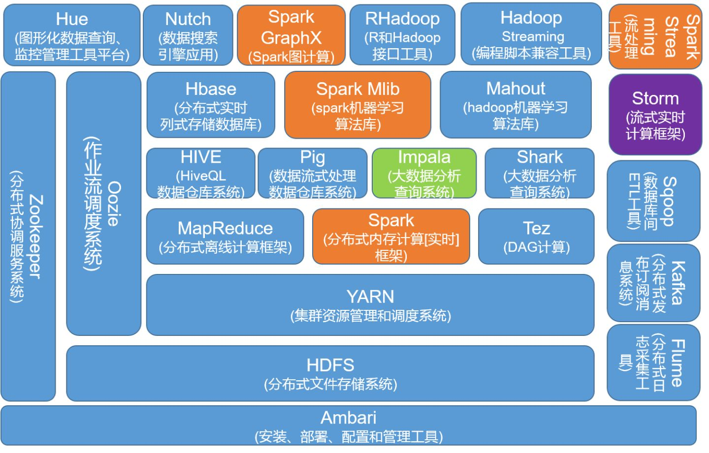

大数据，官方定义是指那些数据量特别大、数据类别特别复杂的数据集，这种数据集无法用传统的数据库进行存储，管理和处理。大数据的主要特点为数据量大（Volume），数据类别复杂（Variety），数据处理速度快（Velocity）和数据真实性高（Veracity），合起来被称为4V。
Apache Hadoop则是大数据应用的关键基础设施，本质上是一款支持数据密集型分布式应用程序的开源软件框架。它被设计成从单个服务器扩展到数千台机器，每台机器都提供本地计算和存储。Apache Hadoop本身不是依赖硬件来提供高可用性，而是设计用于检测和处理应用程序层的故障，因此在计算机集群上提供高可用性服务，但每个集群都可能容易出现故障。
Hadoop历史
Hadoop最早由美国工程师Doug Cutting开发。Doug Cutting同样是用于全文检索和搜索的开放源码程序库Lucene和开源搜索引擎Nutch的作者。
在Google发表的三篇有关GFS、MapReduce和BigTable的技术论文基础上，Doug Cutting分别开发了HDFS（Hadoop分布式文件系统）、MapReduce编程模型和用来处理海量数据的非关系型数据库HBase，它们共同构成了Hadoop。因此，本质上Hadoop是Google大数据系统的开源实现。
各大公司包括Yahoo、IBM、Facebook、亚马逊、阿里巴巴、华为、百度、腾讯等都采用Hadoop构建自己的大数据系统，使Hadoop成为了分布式计算系统事实上的国际标准。
Hadoop框架
Hadoop框架构成如图1所示。下面简单介绍Hadoop框架中的重要组件。

HDFS
Hadoop分布式文件系统(HDFS)被设计成适合运行在通用硬件(commodity hardware)上的分布式文件系统。它和现有的分布式文件系统有很多共同点。但同时，它和其他的分布式文件系统的区别也是很明显的。HDFS是一个高度容错性的系统，适合部署在廉价的机器上。HDFS能提供高吞吐量的数据访问，非常适合大规模数据集上的应用。HDFS放宽了一部分POSIX约束，来实现流式读取文件系统数据的目的。
HBASE
Hbase是一种分布式存储的NoSQL数据库，它参考了谷歌的BigTable建模，实现的编程语言为Java。它是Apache软件基金会的Hadoop项目的一部分，运行于HDFS文件系统之上，为 Hadoop 提供类似于BigTable 规模的服务。因此，它可以对稀疏文件提供极高的容错率。
MapReduce
MapReduce是Google提出的一个软件架构，用于大规模数据集（大于1TB）的并行运算。概念“Map（映射）”和“Reduce（归纳）”，及他们的主要思想，都是从函数式编程语言借来的，还有从矢量编程语言借来的特性。
当前的软件实现是指定一个Map（映射）函数，用来把一组键值对映射成一组新的键值对，指定并发的Reduce（归纳）函数，用来保证所有映射的键值对中的每一个共享相同的键组。
HIVE
数据仓库之父比尔·恩门（Bill Inmon）在 1991 年出版的“Building the Data Warehouse”（《建 立数据仓库》）一书中所提出的定义被广泛接受——数据仓库（Data Warehouse）是一个面 向主题的（Subject Oriented）、集成的（Integrated）、相对稳定的（Non-Volatile）、反映历史 变化（Time Variant）的数据集合，用于支持管理决策(Decision Making Support)。
Apache Hive则是一个建立在Hadoop架构之上的数据仓库。它能够提供数据的精炼，查询和分析。Apache Hive起初由Facebook开发，目前也有其他公司使用和开发Apache Hive，例如Netflix等。亚马逊公司也开发了一个定制版本的Apache Hive，亚马逊网络服务包中的Amazon Elastic MapReduce包含了该定制版本。
hive是基于Hadoop的一个数据仓库工具，可以将结构化的数据文件映射为一张数据库表，并提供简单的SQL查询功能，可以将SQL语句转换为MapReduce任务进行运行。其优点是学习成本低，可以通过类SQL语句快速实现简单的MapReduce统计，不必开发专门的MapReduce应用，十分适合数据仓库的统计分析。
Spark
Apache Spark是一个开源集群运算框架，最初是由加州大学柏克莱分校AMPLab所开发。相对于Hadoop的MapReduce会在运行完工作后将中介数据存放到磁盘中，Spark使用了存储器内运算技术，能在数据尚未写入硬盘时即在存储器内分析运算。Spark在存储器内运行程序的运算速度能做到比Hadoop MapReduce的运算速度快上100倍，即便是运行程序于硬盘时，Spark也能快上10倍速度。Spark允许用户将数据加载至集群存储器，并多次对其进行查询，非常适合用于机器学习算法。
Storm
Storm是一个分布式计算框架，主要由Clojure编程语言编写。最初是由Nathan Marz及其团队创建于BackType，该项目在被Twitter取得后开源。它使用用户创建的“管（spouts）”和“螺栓（bolts）”来定义信息源和操作来允许批量、分布式处理流式数据。最初的版本发布于2011年9月17日。
Storm应用被设计成为一个拓扑结构，其接口创建一个转换“流”。它提供与MapReduce作业类似的功能，当遇到异常时该拓扑结构理论上将不确定地运行，直到它被手动终止。
参考链接
- hadoop和大数据的关系？和spark的关系？,by 小枣君.
- Apache Hadoop,by hadoop.
- HBase 深入浅出,by 沈钊伟.
- MapReduce,by wikipedia.
- Apache Spark,by wikipedia.
- Apache Storm,by wikipedia.
- Apache Hive,by wikipedia.
- Hive学习之路 （一）Hive初识,by 扎心了，老铁.